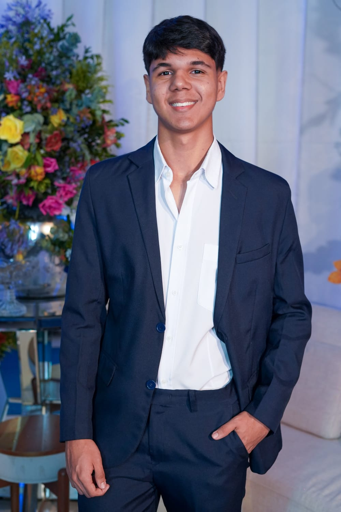

Meu nome é Juan Ricardo Correa, tenho 18 anos, meu pais se chamam Richardson Correa e Elaine Cunha Correa,e atualmente estou cursando Ciências da Computação na UVV . Sempre tive vontade de trabalhar nessa área porque sempre gostei de programação e computadores. Minhas matérias na UVV são: Experiência e Interface com Usuário , Construção de Software para Web, Lógica para Computação, Desgin e Desenvolvimento de Banco de Dados 1, Fundamentos de Tecnologia da Computação, Texto Científico, elas falam sobre a computação no geral, ensinando como programar, solucionar problemas, entre outros. Quer saber mais sobre a minha vida? Clique aqui.
Sei cozinhar, nadar e sei jogar bem volei e handbol
Faço academia, gosto de jogar bastante Valorant e Rocket Laeague no meu computador, e sempre que possível eu pratico um pouco de volei e handbol, gosto bastante de escutar músicas e ver jogo de futebol do meu time, que é o Vasco.
Minha vida acadêmica inteira foi feita na Escola São Camilo de Lellis, participei de projetos na escola, como por exemplo Feira de Ciências, entre outros. Meu desejo no futuro é ser um bom programador
Meus planos para o futuro é programar para grandes empresas e ser uma pessoa de importância
